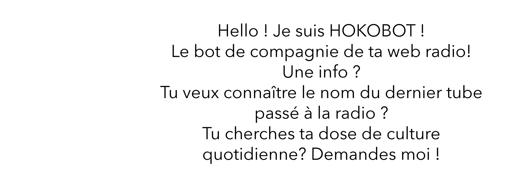

Parce que pour nous, la culture c'est pas de la confiture !
Chez Hoko, la culture c'est notre drogue dure !
Musique, streetart, expo, littérature...
Retrouve les chroniqueuse Hoko pour ta dose quotidienne de culture !

Direct
Les directs des coulisses de ta radio
Les coulisses de ta radio
Lance direct en vidéo, Vis nos backstages du quotidien !
Intéragis avec nous sur nos réseaux
& get your Hoko dose !
Podcast
Tu as raté notre dernière émission ? Le sujet de notre dernière interview ? Pas de soucis, récupère les podcasts de os dernières interventions !
Retrouvez nos derniers podcast :
- Interview de Worakls
- Rencotre avec Fred Ficus
- Art'ung Festival : organiser un festival vous y avez sovent pensé, ils l'ont fait.
Vous
Nous le savons, vous êtes aussi accro à la culture que notre team !
Prends partie, envoie-nous tes sujets ! Tu as enregistré un podcast et souhaites être entendu ?
Nous nous engageons à écouter chacun des enregistrements qui nous seront envoyés, et à en diffuser un par semaine sur notre radio !
Fais tourner ta culture !
FAQ
Hoko c’est qui ?
La team Hoko, c’est une équipe indépendante et bénévole qui a à cœur de vous partager sa dose quotidienne de culture !
Si je veux contribuer au projet, je fais quoi ?
Toi aussi tu es un mordu de culture ? Du street-art à la littérature en passant par les concerts et la peinture ? Alors n’hésite pas, envoie-nous ta candidature, tes podcasts ou tout simplement tes idées ! Nous sommes toujours en recherche de bénévoles pour l’équipe et nous garantissons une réponse sous trois jours ! Tu as l’âme d’un indépendant et des idées à profusion, contactes nous : redaction@hoko-magazine.fr !
Chez Hoko, comment choisissez-vous vos sujets ?
Chez Hoko, si nous avons choisi d’être indépendants, c’est avant tout pour parler de ce qu’il nous plaît, quand il nous plaît ! Toutes les semaines, nous analysons les propositions de nos auditeurs et nous choisissons deux sujets que nous approfondissons dans la semaine.
Musique, streetart, expo, littérature...
Retrouve les chroniqueuse Hoko pour ta dos quotidienne de culture !